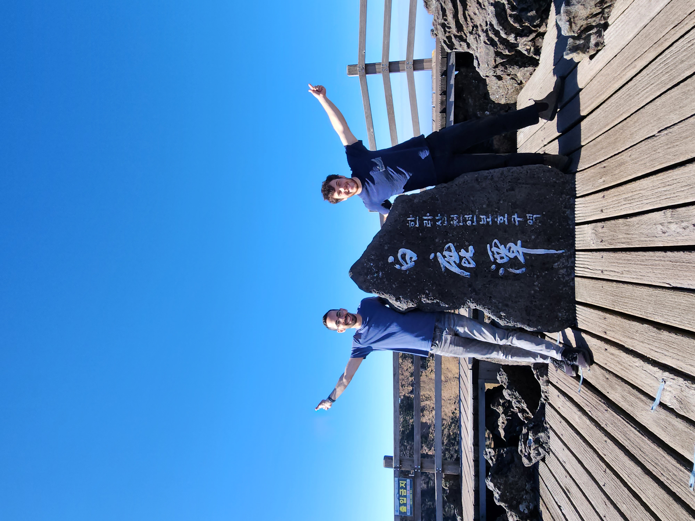
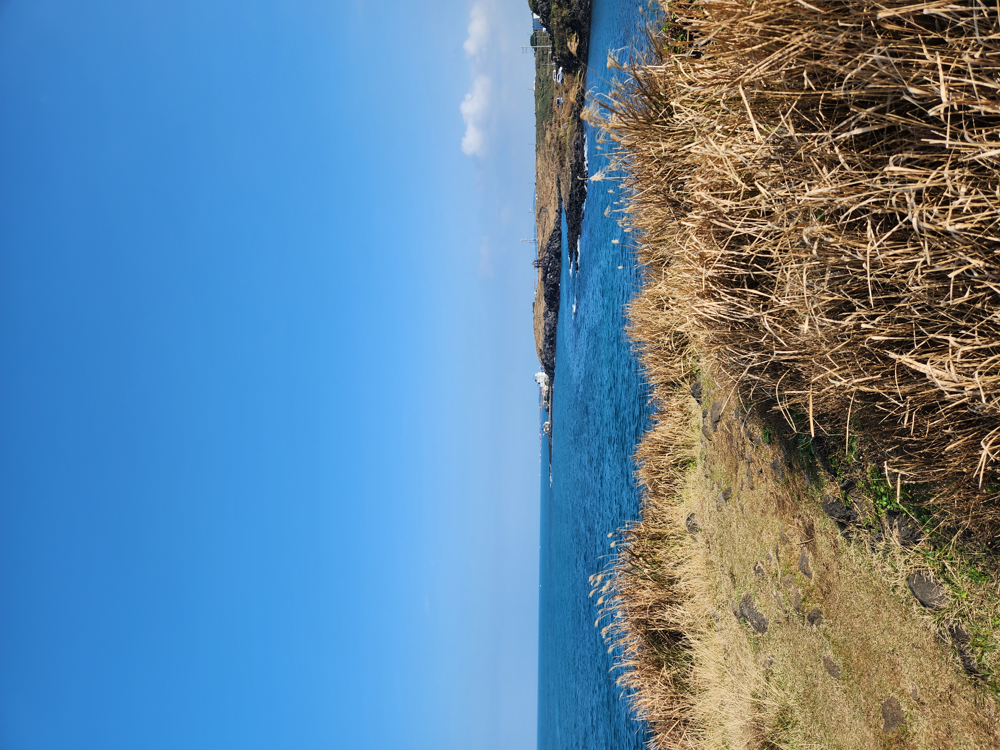
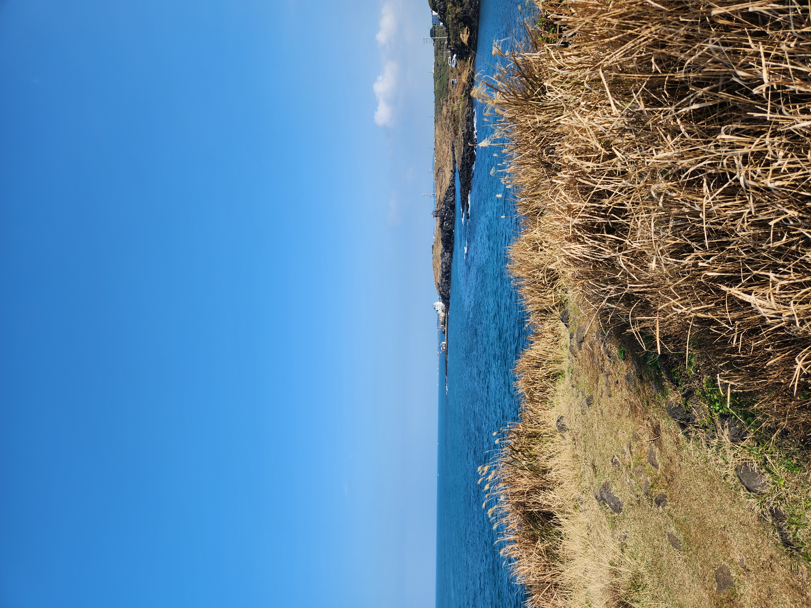

Trip to South Korea
I flew to South Korea on the 1st of November, until the 19th I met my friend Guy there and traveled together with him, we traveled to Japan together last year, so it was really exciting! But also I kinda didn't want to really fly. It always happens to me, I get too comfortable in my routine (even though the routine might not be the best for me). But the second I actually board the plane I just feel like "oh finally, a break!". Although I'm also a bit cranky on travel days. But it passes rather quickly.
On the flight I sat next to 2 Singaporeans. It was a night flight and I feel a sleep rather quickly. They kept waking me up to go to the bathroom. No hard feelings. I was sited in the aisle after all. Also I fell asleep with my headphones case in my hands. When I woke up it wasn't in my hands anymore. I found it with 1 earpiece missing. After the plane landed I looked for it with a flight attendant. She was so happy I found it, she literally jumped in joy!
Seoul
We stayed in Seoul the longest, we were here for a total of 10 days (and I had an extra 2 because I flew 2 days after Guy).
I think as for city wise Seoul was my favorite. It resembled Tokyo in a way, as it being the busiest and also the cleanest / most futuristic. But! It was also very similar to Japan in many ways (temples looked the same, similar metro, etc). So I lost patience quickly. Guy seemed to agree with me. Still I liked it. I found a pottery place that I didn't manage to properly communicate with. So I didn't manage to throw clay at all in Korea. Oh well.
A friend asked me if Koreans are racist towards foreigners. And I'm sure they are, but when I talked to most of them they were all nice and smiley. Nothing out of the ordinary. They do however really don't care if you're lost. You have to really get their attention. I had a few Koreans completely ignore me when I was literally waving at their face!
Other than that, obviously the food is wonderful if you like fried chicken and kimchi.


Sokchu & Seorksan
After that we went to Sokchu to hike up in Seorksan. We woke up at 6 AM (a recurring theme) to take a bus to Sokchu. I fell asleep instantaneously and when we arrived the city looked like it was just uncovered from being below the sea because it was raining and everything was wet. We only had our backpacks because it was a 2 day break from Seoul so we went immediately to Seorksan and let me tell you, it was the best nature I saw in a long while.


On the first day we started the hike to the high mountain summit, only to realize we are to late and couldn't get past the entry gate. So we went to the other side where the hike is shorter, only to give up 1 KM from the top because it started getting dark.
The following day we attempted the summit (we even woke up at 6 AM again!) only to realize that it's not gonna happen in 1 day, as we were told by an elder Korean couple. They were so concerned for our safety, they told us like 5 times that the summit is unreachable in 1 day. When we stopped for lunch we met them again, and they shared an apple with us, which is something I'm gonna cherish forever.
As for Sokchu, it was a really boring city. Maybe it was also because we were dead every day from a hike. But it seemed like a ghost town with most of the shops closing at 20:00.
Busan
Each city in Korea has a slogan, Seoul's is "Seoul my Soul" and Busan's is "Busan is good", you know, so the people of Busan won't get too excited.
Busan was fine really. I think it caught me when I was exhausted. As I was a big hater for Busan. It was nice! But not as much as Seoul, and I really got sick of cities. I still traveled around but I was like really impatient with the cities. But it was quite the conundrum, as I didn't want to sit in the hotel, but also not walk around aimlessly.
We did however, find the best Shabu Shabu we ever had. It was so good we went back day after day (we even wanted to go back for a third day. But we agreed it was too much).
We had a theme of eating in the same place multiple days in a row. For example in Jeju we went to eat the same Shakshuka twice, and this Shabu Shabu, and a Korean bbq place in Seoul that Guy went to 3 times (and I went Twice).
At least we didn't eat a lot of fast food items. For example there is this fried chicken chain "Mom's touch". We were there only once.
Gyeongju
Gyeongju was a city that we went for a day trip from Busan, it was really nice! But again I was exhausted. In the end I'm glad we went, but I was ready to skip over it. Glad Guy said that he will go anyway. Made my fomo kick in and join.
We went to the famous bridge there and traveled the city.
In the city apparently there is a bakery that makes traditional red bean paste buns. With a line that literally took 30 minutes. Obviously I had to stand there. It was quite funny. A line with all Korean people, and me!

It wasn't that tasty.
Jeju
Then we went to Jeju, in Jeju we wanted to hike Hallasan mountain and do section 18 in the Jeju olle trail.
We arrived around 18:00 on the first day so we just took a chill night and prepared for the hike the day after. And then the morning after we woke up at 6 (again) and started the Hallasan mountain trail. We went from Gwaneumsa trail up and took Seongpanak trail on the way down. It was a wonderful trail. A bit too much stairs for my taste but wonderful. On the way we met A Canadian couple that one of them knows Hebrew as she's Jewish and went to Israel multiple times. And A danish girl and a Czech girl. We traveled up together and finally we reached the summit. The main attraction of the summit was to take a picture with a rock. So obviously we took one as well.

Afterwards we went down which was another 17 KM and reached the bus station. We were dead the next day. We wanted to hike day after day, boy we were wrong. I barely moved the next day.
I did however find a really nice coffee shop with Shakshuka! So we went there multiple times as well of course

The following day we did the olle trail 18, it was nice. A lot of the trail is in the city and then it gets to an amazing part near the ocean. It was 20 KM as well.
 



And then we went back, ate Shakshuka again. And just rested as our flight was at 7:50 the following day so we had to wake up at 5:30 AM.
We reached Seoul, Guy was with me for half a day as he had a flight. And then I went around for 2 days solo. I mostly filled my days with nonsense. I tried looking for gifts for people but I failed at that. hopefully I will find something in Taiwan. I did meet a sweet Canadian guy while bouldering on my last night. He has been changing the country he lives in every 4 years. He lived in South America, Africa and now Seoul. We went to a pub afterwards, and talked about life. He even paid for my meal!
And that's it, I woke up the following day and flew to Taiwan.
I enjoyed Korea a lot, but not sure I will be back so soon. Maybe only to finally hike up the summits in Seorksan.